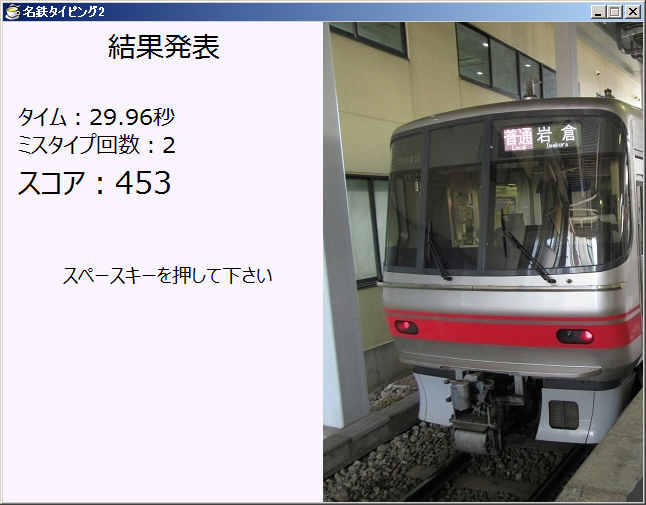
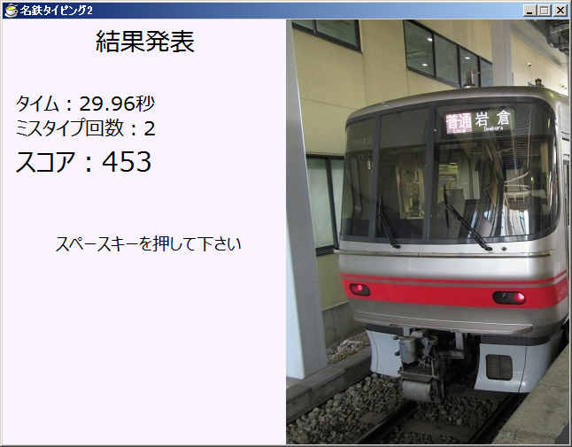
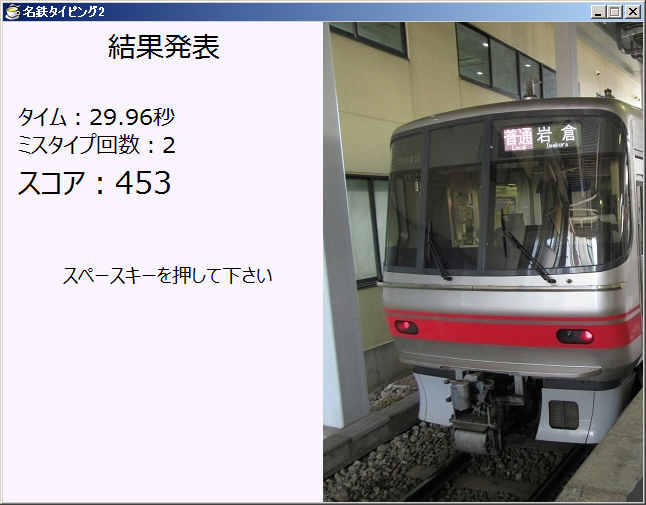

AraTech - Official
ゲーム
Windows用ゲーム
名鉄タイピング2 NEW!
名鉄タイピング2
 

あの「めいてつタイピング」が、1年の沈黙を破り帰ってきた！
システムを1から作り直し、スコア計算の強化とミスタイプの計測機能を追加しました。
Ver.1.1：ダウンロード (244KB)
【古いバージョン】
Ver.1.0：ダウンロード (244KB)
(c)2015-2016 Sora Arakawa. all rights reserved.
